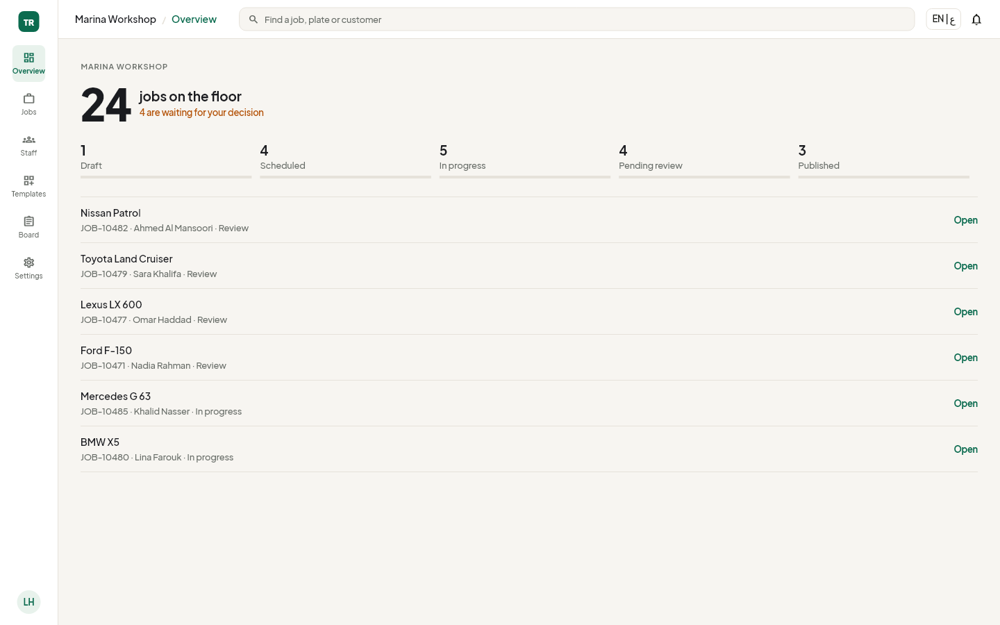
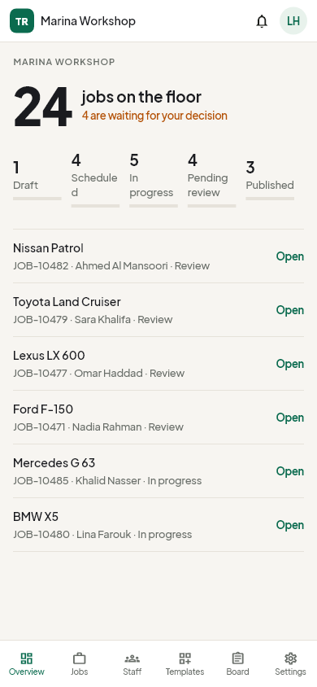
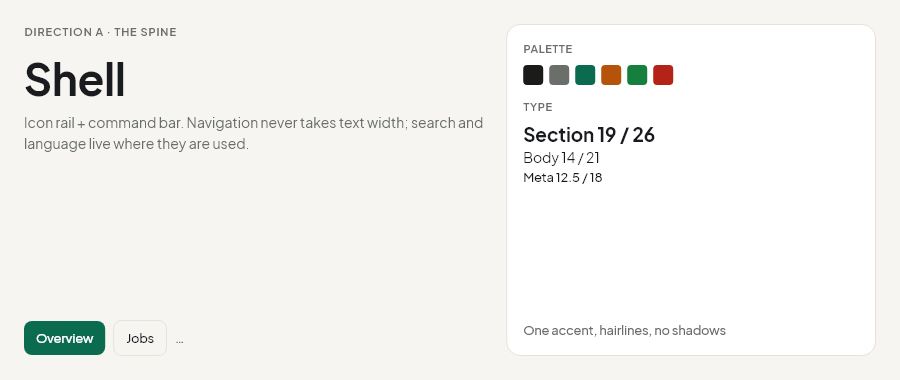
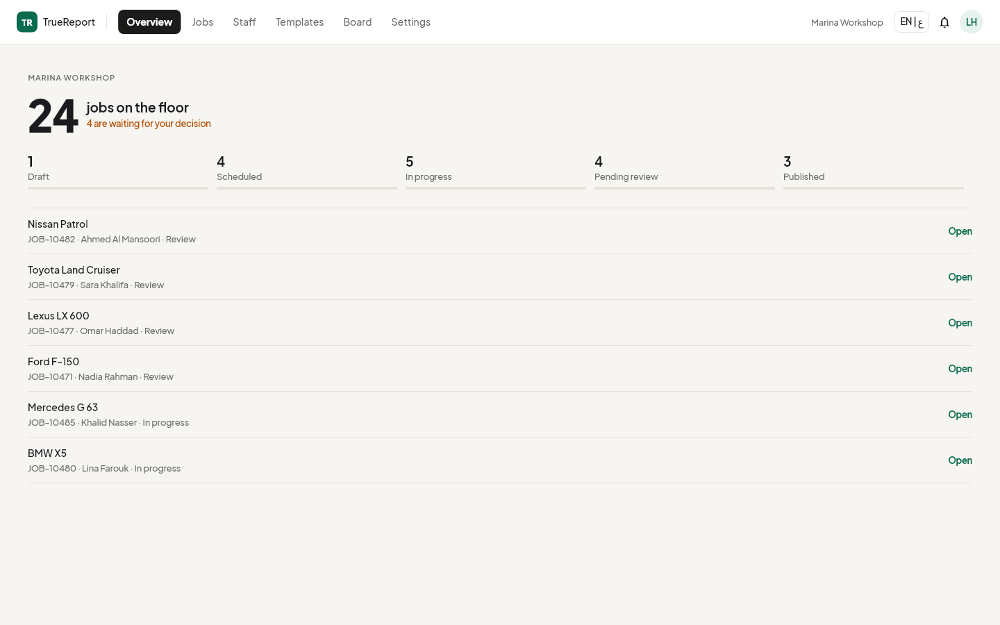
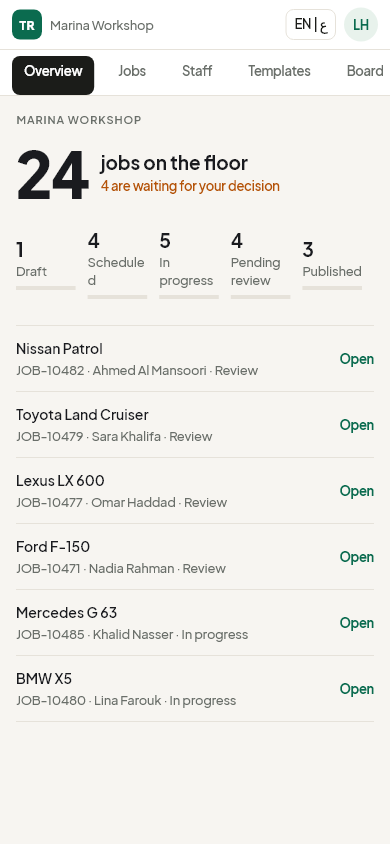
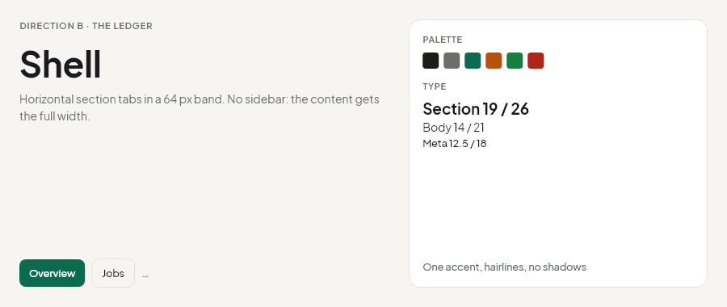
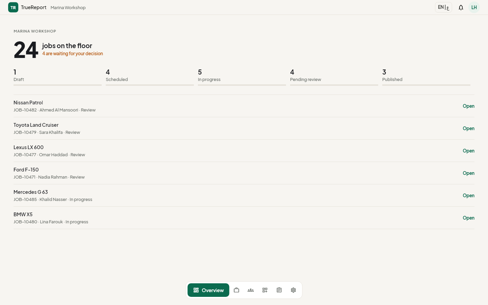
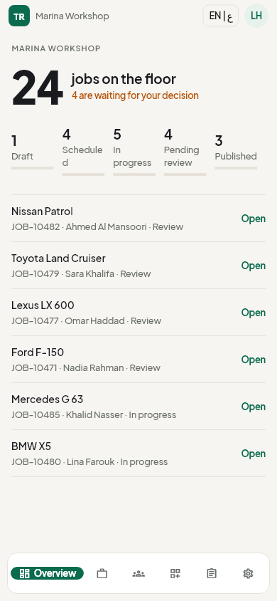

The same neutral sample page sits inside all three shells, so the comparison is the chrome and the width it leaves behind. Real fonts, 1440 and 390. Nothing here is production code yet.
Icon rail + command bar. Navigation never takes text width; search and language live where they are used.



Trade-off: icon-only navigation costs recognition, and six labels at 9.5 px is the weakest phone moment. Search must route somewhere real.
Six section tabs in a 64 px band, no sidebar, so the content owns the full width.



Trade-off: six text tabs plus tools will not fit at 1024 without truncation; on phone the strip scrolls, so Settings is off-screen.
Content first: identity in a 44 px strip, navigation in a floating dock where only the active item shows its name.


Trade-off: unconventional for a desktop admin tool, and the dock overlays the last ~90 px of content (a padding contract for every screen).